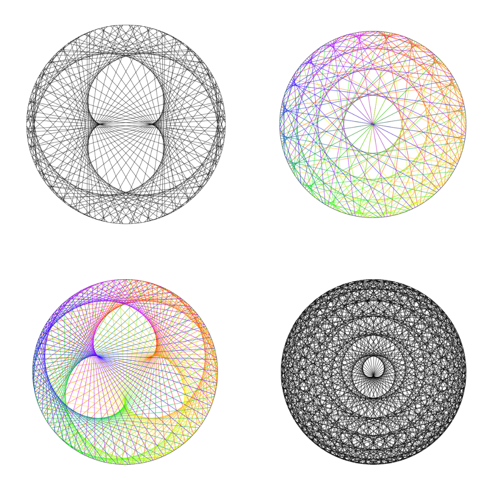
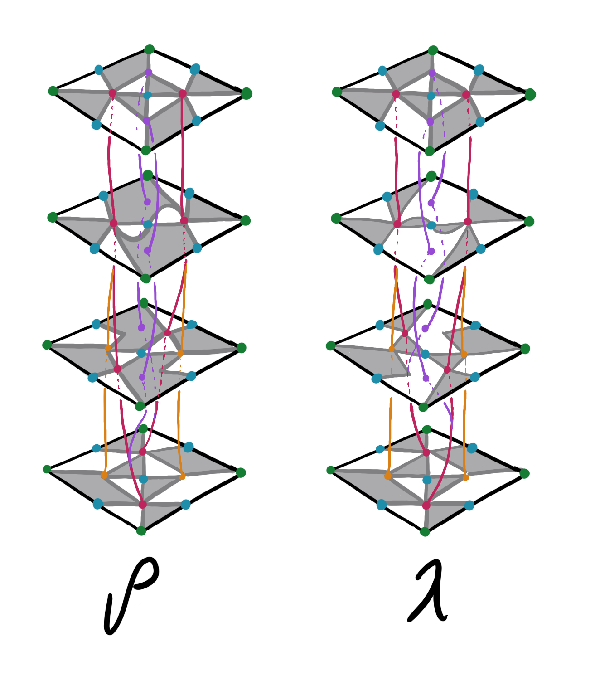
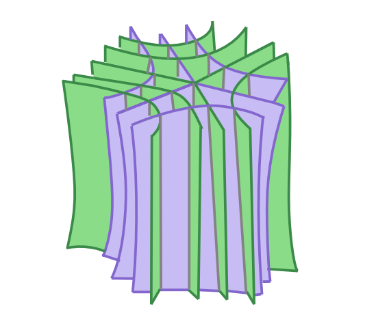
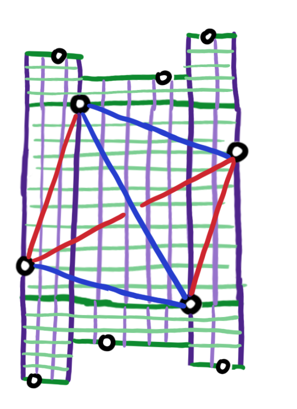
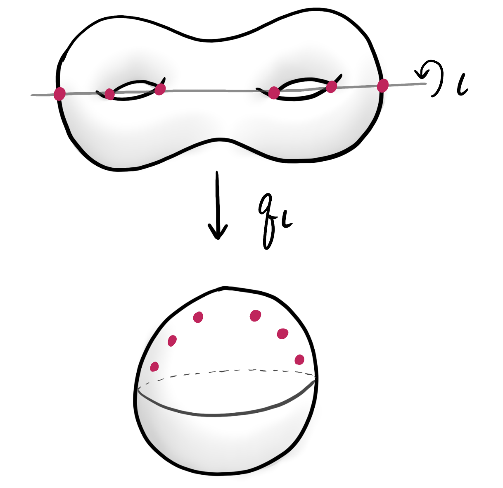
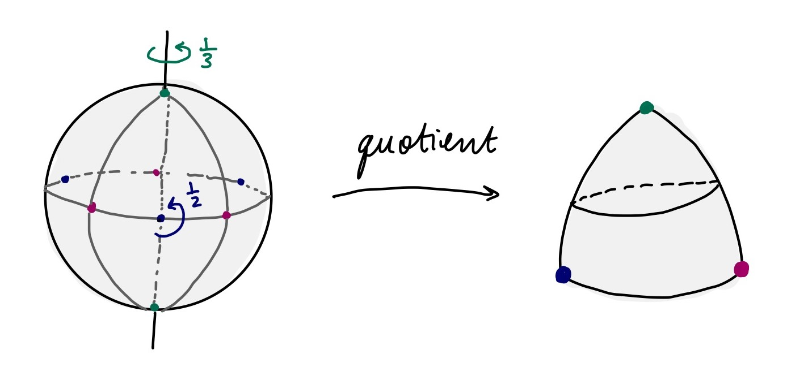
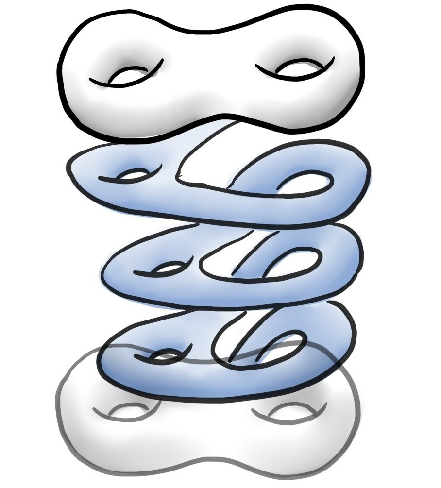
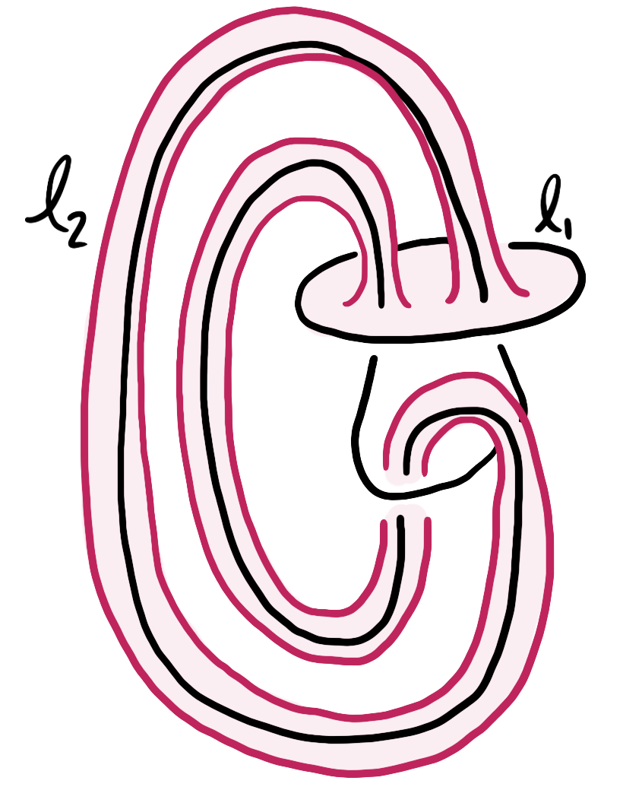
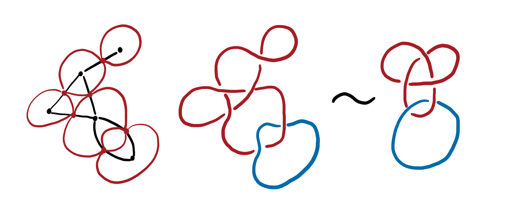

Abstract: We construct a specific branched submersion for a 3-manifold with a taut codimension one foliation transverse to a pseudo-Anosov flow. This map is a leafwise branched covering for the foliation: the restriction to each leaf is a branched covering. Moreover, its critical locus is a set of closed orbits of the flow, containing all the singular orbits. The construction depends only on the pseudo-Anosov flow and is done via an associated veering triangulation. We also develop framework for branched submersions, homotopies through branched immersions, and taut cone fields. In the last section, we work out an explicit example for the figure eight knot complement.
Abstract: Curve stitching is a classic educational activity where one constructs elegant curves from a family of straight lines. We perform curve stitching around a circle to make a modular stitch graph. Take m points equally spaced around a circle, choose an integer multiplier a, and draw a chord from point p to a p mod m What design will appear as the envelope of these chords? We connect these discrete objects to a continuous-time dynamical system and apply a topological perspective to understand the answer to this question.




These are class notes from a course on 3-manifolds taught by Danny Calegari and Benson Farb in Fall 2024. There are still some comments and unfinished ideas. All mistakes are my own.
This is my topics proposal for my PhD candidacy exam. It covers Riemann surfaces, mapping class groups, and foliations on three-manifolds.
This is my final paper for Differential Topology at U Chicago.
An exploration of the mathematics of designing crochet patterns for Seifert surfaces. This writeup was for the Big Internet Math-Off in 2024.
An introduction to the configuration space of points using dancers on a stage as an example. This writeup was for the Big Internet Math-Off in 2024. I discuss these same ideas in a dance film.
This was my final paper for my undergraduate complex analysis class. It covers Mobius transformations, some basic group theory, and the classification of finite 3-dimensional rotation groups.




